Introduzione
In questo progetto creaiamo la nostra versione del famosissimo gioco per mobile chiamato Flappy Bird. Questo progetto necessita di Scratch 2.0.
Premi la barra spaziatrice per far sbattere le ali al pappagallo Flappy e farlo volare attraverso gli i tubi tagliati!

Passo 1: Fai cadere Flappy
Lista delle Attivita’
- Crea un nuovo progetto Scratch. Rimuovi il gatto Felix con click-destro e seleziona cancella.
- Sostituisci lo sfondo con lo sfondo desert presente nella categoria Natura della libreria di Scratch
- Aggiungi il pappagalli Flappy. Devi aggiungere uno sprite con due costumi. Uno per ali-su ed uno per ali-giu. Lo sprite Parrot nella categoria Animali della libreria di Scratch va benissimo
- Cambia il nome dello sprite in flappy
Crea un nuovo script per flappy:
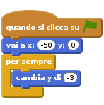
Verifica il progetto
Fai click sulla bandierina verde
- Flappy inizia a volare al centro dello schermo e poi cade giu’?
Salva il progetto
Passo 2: Fai volare Flappy
Vogliamo che flappy voli in alto quando premi la barra spaziatrice
Lista delle Attivita’
- Fai click sul tab Costumi e chiama i costumi con ali-su e ali-giu.
Adesso torna al tab Script ed aggiungi questo script:
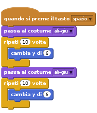
Verifica il progetto
Fai click sulla bandierina verde
- Riesci a controllare flappy con la barra spaziatrice?
- Noti che qualche volta premi spazio ma flappy non si muove?
Ok risolveremo questo problema dopo…
Salva il progetto
Passo 3: Aggiusta i controlli
Ci piacerebbe che flappy rispondesse ai nostri comandi ogni volta che premiamo spazio. Quando premiamo spazio flappy inizia due cicli di movimento. Se premiamo spazio dinuovo prima che i loop siano finiti Scratch ignora la seconda pressione del tasto spazio. Per risolvere questo problema dobbiamo usare una variabile che conta il numero di battiti di ali necessari.
Lista delle Attivita’
- Stacca il blocco sotto
quando si preme il tasto [spazio v]e mettilo di lato. Lo useremo dopo - Crea una nuova variabile solo per flappy e chiamala
ali. Aggiungi questo script trascinando il blocco che avevi messo di lato
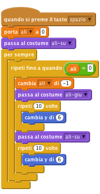
Infine aggiungi al blocco
quando si preme il tasto [spazio v]: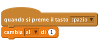
Verifica il progetto
Fai click sulla bandierina verde
- Adesso flappy sbatte le ali ogni volta che premi spazio?
Passo 4: Aggiungiamo le tubature
Adesso aggiungiamo degli ostacoli che Flappy deve evitare
Lista delle Attivita’
- Fai click su
Disegna un nuovo sprite - Chiama il tuo costume con tubo
- Se il costume e’ in
modalita' Bitmapfai click sul pulsanteConverti in vettoriale - Fai click su
Zoom -cosi’ da vedere tutta l’area di disegno - Fai click sullo strumento
Rettangolo, seleziona un colore e fai click sulRettangolo pieno(in basso a sinistra) - Fai click e crea due rettangoli, uno dall’alto verso il basso ed un altro dal basso verso l’alto, come visualizzato in figura:

- Puoi sfumare il colore dei rettangoli facendo click sullo strumento
Riempi con il coloree poi facendo click suGradiente orizontale. Scegli due tonalita’ dello stesso colore per la sfumatura. Adesso fai click all’interno di ciscun rettangolo e vedrai che verra’ colorato con una sfumatura dei due colori da te scelti. - Chiama il tuo sprite tubo
Salva il progetto
Passo 5: Facciamo muovere le tubature
Adesso facciamo muovere le tubature in modo casuale in modo da ostacolare il volo di Flappy.
Lista delle Attivita’
- Fai click sullo sprite tubo* e seleziona il tab
Scripts. Aggiungi questi script:
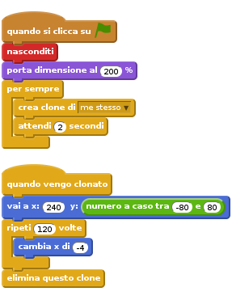
Verifica il progetto
Fai click sulla bandierina verde
- Vedi le tubature apparire a con una fessura a diverse altezze?
Se e’ troppo difficile far volare Flappy tra le tubature, puoi rendere la fessura tra i tubi piu’ ampia. Devi editare nuovamente il costume del tubo.
Salva il progetto
Passo 6: Accorgersi delle collisioni con le tubature
Per rendere il gioco coinvolgente, il giocatore deve far volare Flappy attraverso le fessure nei tubi senza toccarli mai. Adesso aggiungiamo alcuni blocchi per capire quando Flappy urta qualcosa
Lista delle Attivita’
- Aggiungiamo un effetto sonoro per quando Flappy urta i tubi. Fai click sullo sprite flappy e poi sul tab
Suoni Scegli un suono dalla libreriae seleziona screech dalla categoria Elettronica- Adesso torna sullo script per Flappy
Aggiungi questo script:
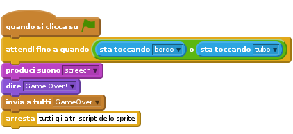
Fai click sullo script del tubo ed aggiungi:
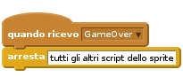
Verifica il progetto
Fai click sulla bandierina verde
- Il gioco finisce quando Flappy urta un tubo o il bordo dello schermo?
Salva il progetto
Passo 7: Aggiungi il punteggio
Il giocatore fa’ un punto ogni volta che riesce a far volare Flappy attraverso una tubatura
Lista delle Attivita’
- Aggiungiamo un effetto sonoro per quando Flappy fa’ un punto. Fai click sullo sprite tubo ed aggiungi un suono dalla libreria. Scegli bird dalla categoria Animali
- Torna sullo script di tubo
- Crea una nuova variabile
per tutti gli spritee chiamalapunteggio. - Aggiungi un blocco per impostare il punteggio a 0 quando il gioco inizia
- Aggiungi il blocco seguente:
blocks quando vengo clonato attendi fino a quando ((posizione x) < ([posizione x v] di [flappy v])) cambia [punteggio v] di (1) produci suono (bird)
Verifica il progetto
Fai click sulla bandierina verde
- Il punteggio viene incrementato quando Flappy passa attraverso una tubatura?
Salva il progetto
Ben fatto!! Hai finito il gioco base. Ci sono altre cose che puoi fare cin il tuo gioco. Dai un’occhiata alle sfide!
Sfida 1: Aggiungi un record
- Crea una nuova variabile e seleziona
Cloud variable (stored on server). Chiamalarecord Quando il gioco e’ finito controlla se devi registrare un nuovo record:
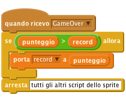
Verifica il progetto
Fai click sulla bandierina verde
- Il record viene aggiornato correttamente?
Salva il progetto
Sfida 2: Aggiungi l’effetto gravita’
Quando qualcosa cade solitamente non lo fa’ a velocita’ costante. Per questa sfida faremo cadere Flappy con un’accelerazione di gravita’.
- Aggiungi una nuova variabile solo per lo sprite flappy e chiamala
gravita'. Cambia lo script per flappy in questo modo:
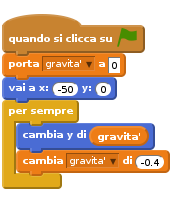
Cambia lo script di volo in questo modo:
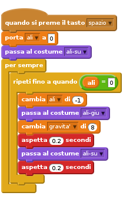
Verifica il progetto
Fai click sulla bandierina verde
- Adesso Flappy e’ attratto verso il basso quando vola e cade?
Salva il progetto
Sfida 3: Flappy cade per terra
Quando il giocatore perde la partita Flappy cade a terra al fondo dello schermo
- Sostituisci il blocco
invia a tutti GameOverconinvia a tutti cado Adesso aggiungi questo script:
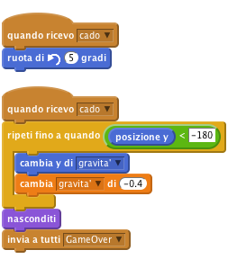
Non dimenticarti di aggiungere il blocco
mostramie di orientare Flappy nella giusta direzione quando il gioco inizia.
Verifica il progetto
Fai click sulla bandierina verde
- Flappy cade per terra quando urta una tubatura?
- Flappy riappare nella corretta posizione ed orientamento quando il gioco riprende?
Salva il progetto
Ben fatto!!! Hai finito con questo esercizio. Adesso divertiti con il tuo nuovo gioco!!!
Ehi, non dimenticare che puoi condividere il tuo gioco con tutti i tuoi amici e familiari. Basta che fai selezioni il menu File e poi Share to website!!